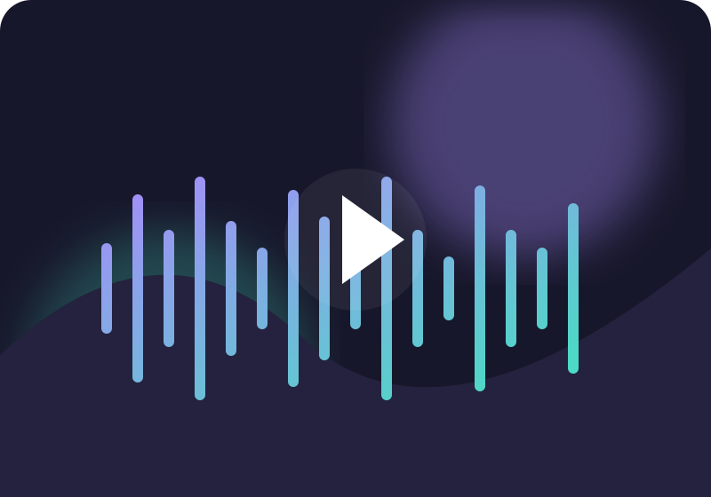

Indie Việt: Khi những câu chuyện nhỏ tạo nên thanh âm lớn
Một thế hệ nghệ sĩ mới đang kể câu chuyện của mình bằng âm nhạc độc lập, chân thật và đầy màu sắc.

Âm nhạc độc lập không chỉ là một thể loại. Đó còn là cách nghệ sĩ tự do thử nghiệm, tự kể câu chuyện và tìm thấy cộng đồng đồng điệu. Từ những bản thu tại phòng ngủ đến sân khấu nhỏ, mỗi sản phẩm đều mang theo dấu ấn cá nhân.
Không cần khuôn mẫu để tạo khác biệt
Sự phát triển của nền tảng số giúp nghệ sĩ trẻ tiếp cận người nghe dễ dàng hơn. Khán giả cũng có cơ hội khám phá những màu sắc mới thay vì chỉ nghe các bản hit quen thuộc.
Nghe bằng sự tò mò
Hãy dành thời gian cho những nghệ sĩ mới, lưu lại ca khúc khiến bạn rung động và chia sẻ âm nhạc bạn yêu thích. Đó cũng là cách cộng đồng âm nhạc độc lập lớn lên mỗi ngày.
Bài viết minh họa cho giao diện tạp chí SoundWave.
Khám phá nhạc Indie